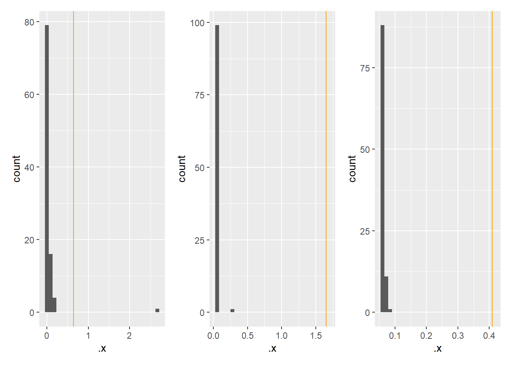
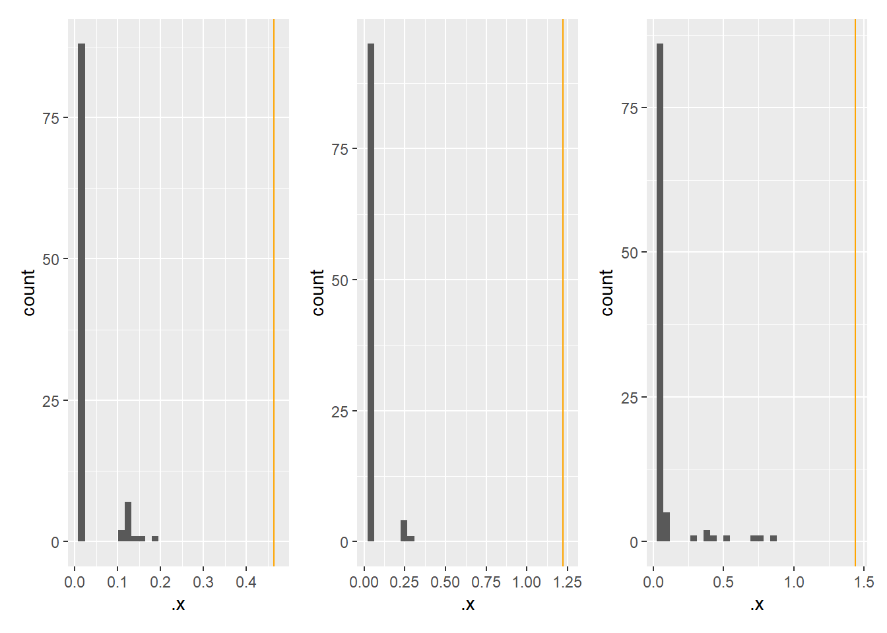

library(synthpop)
library(patchwork)
library(purrr)
library(dplyr)
library(ggplot2)
library(lfda)
library(densratio)Can density ratio fitting be an easier and more generally applicable alternative to the \(pMSE\)?
The \(pMSE\) has problems when the goal is to detect missing relationships between variables. We now assess whether density ratio fitting better equiped for this problem.
Generate data
Three predictor variables
set.seed(123)
N <- 500
r <- 0.5
P3 <- 3
M3 <- rep(0, P3)
SR3 <- matrix(r, P3, P3)
diag(SR3) <- 1
SS3 <- diag(P3)
XR3 <- rnorm(N*P3) |> matrix(N, P3) %*% chol(SR3)
XS3 <- rnorm(N*P3) |> matrix(N, P3) %*% chol(SS3)Ten predictor variables
P10 <- 10
M10 <- rep(0, P10)
SR10 <- matrix(r, P10, P10)
diag(SR10) <- 1
SS10 <- diag(P10)
XR10 <- rnorm(N*P10) |> matrix(N, P10) %*% chol(SR10)
XS10 <- rnorm(N*P10) |> matrix(N, P10) %*% chol(SS10)Twenty predictor variables
P20 <- 20
M20 <- rep(0, P20)
SR20 <- matrix(r, P20, P20)
diag(SR20) <- 1
SS20 <- diag(P20)
XR20 <- rnorm(N*P20) |> matrix(N, P20) %*% chol(SR20)
XS20 <- rnorm(N*P20) |> matrix(N, P20) %*% chol(SS20)Combine data sets
XR <- list(XR3, XR10, XR20)
XS <- list(XS3, XS10, XS20)Density ratio fitting without dimension reduction
square <- function(x) x^2
obs <- map2(XR, XS, function(real, synthetic) {
out <- densratio(real, synthetic, verbose = F)
bind_rows(data.frame(real), data.frame(synthetic)) |>
out$compute_density_ratio() |>
log() |>
square() |>
mean() |>
sqrt()
})
future::plan(future::multisession)
ref <- map2(XR, XS, ~ furrr::future_map_dbl(1:100, function(x) {
D <- bind_rows(data.frame(.x), data.frame(.y))
ID <- sample(nrow(D), nrow(.x))
D1 <- D[ID, ]
D2 <- D[-ID, ]
out <- densratio(D1, D2, verbose=F)
out$compute_density_ratio(D) |>
log() |>
square() |>
mean() |>
sqrt()
}, .options = furrr::furrr_options(seed = T)))
# Observed root mean squared log density ratio
obs [[1]]
[1] 0.6461769
[[2]]
[1] 1.652215
[[3]]
[1] 0.4098761# Permutation reference distribution ofroot mean squared log density ratio
map(ref, quantile) [[1]]
0% 25% 50% 75% 100%
0.01370740 0.01603936 0.01716721 0.01870617 2.68713253
[[2]]
0% 25% 50% 75% 100%
0.03205027 0.03349135 0.03434333 0.03537745 0.27775340
[[3]]
0% 25% 50% 75% 100%
0.05815511 0.05980194 0.06100580 0.06287838 0.08867825 # Visualization of observed against reference distribution
map2(ref, obs, ~ ggplot(NULL, aes(.x)) +
geom_histogram() +
geom_vline(xintercept = .y, col = "orange")) |>
patchwork::wrap_plots(ncol = 3)`stat_bin()` using `bins = 30`. Pick better value with `binwidth`.
`stat_bin()` using `bins = 30`. Pick better value with `binwidth`.
`stat_bin()` using `bins = 30`. Pick better value with `binwidth`.
The density ratio is structurally more extreme than what would be expected based on the null distribution, using bootstrapped samples, but there isn’t a clear trend in the direction of the effect.
ref2 <- map(list(R3 = SR3, R10 = SR10, R20 = SR20),
~ furrr::future_map_dbl(1:100, function(x) {
P <- length(diag(.x))
R1 <- rnorm(N*P) |> matrix(N, P) %*% chol(.x)
R2 <- rnorm(N*P) |> matrix(N, P) %*% chol(.x)
out <- densratio(R1, R2, verbose = F)
bind_rows(data.frame(R1), data.frame(R2)) |>
out$compute_density_ratio() |>
log() |>
square() |>
mean() |>
sqrt()
}, .options = furrr::furrr_options(seed = T)))
obs[[1]]
[1] 0.6461769
[[2]]
[1] 1.652215
[[3]]
[1] 0.4098761map(ref2, quantile)$R3
0% 25% 50% 75% 100%
0.01477695 0.01797556 0.01884587 0.02044711 0.17831991
$R10
0% 25% 50% 75% 100%
0.03590965 0.04070683 0.04262265 0.04815451 0.33245515
$R20
0% 25% 50% 75% 100%
0.06456095 0.07223954 0.07688534 0.08239383 0.25921169 Density ratio fitting after LFDA
obs_lfda <- map2(XR, XS, function(real, synthetic) {
X <- bind_rows(data.frame(real), data.frame(synthetic))
Y <- rep(c("Real", "Synthetic"), times = c(nrow(real), nrow(synthetic)))
red <- lfda(X, Y, r = 2, metric = "orthonormalized")$Z |> data.frame()
out <- densratio(red |> filter(row_number() <= nrow(real)),
red |> filter(row_number() > nrow(real)),
verbose = F)
out$compute_density_ratio(red) |>
log() |>
square() |>
mean() |>
sqrt()
})
future::plan(future::multisession)
ref_lfda <- map2(XR, XS, ~ furrr::future_map_dbl(1:100, function(x) {
X <- bind_rows(data.frame(.x), data.frame(.y))
Y <- sample(rep(c(0,1), times = c(nrow(.x), nrow(.y))))
red <- lfda(X, Y, r = 2, metric = "orthonormalized")$Z |> data.frame()
out <- densratio(red |> filter(Y == 0),
red |> filter(Y == 1),
verbose = F)
out$compute_density_ratio(red) |>
log() |>
square() |>
mean() |>
sqrt()
}, .options = furrr::furrr_options(seed = T)))
# Observed mean squared log density ratio
obs_lfda[[1]]
[1] 0.4647219
[[2]]
[1] 1.221474
[[3]]
[1] 1.437568# Permutation reference distribution of mean squared log density ratio
map(ref_lfda, quantile) [[1]]
0% 25% 50% 75% 100%
0.01240445 0.01474324 0.01595485 0.01674699 0.17971614
[[2]]
0% 25% 50% 75% 100%
0.02954242 0.03106060 0.03194088 0.03454806 0.26862589
[[3]]
0% 25% 50% 75% 100%
0.05501820 0.05783869 0.05909721 0.06198345 Inf # Visualization of observed against reference distribution
map2(ref_lfda, obs_lfda, ~ ggplot(NULL, aes(.x)) +
geom_histogram() +
geom_vline(xintercept = .y, col = "orange")) |>
patchwork::wrap_plots(ncol = 3)`stat_bin()` using `bins = 30`. Pick better value with `binwidth`.
`stat_bin()` using `bins = 30`. Pick better value with `binwidth`.
`stat_bin()` using `bins = 30`. Pick better value with `binwidth`.Warning: Removed 1 rows containing non-finite values (`stat_bin()`).